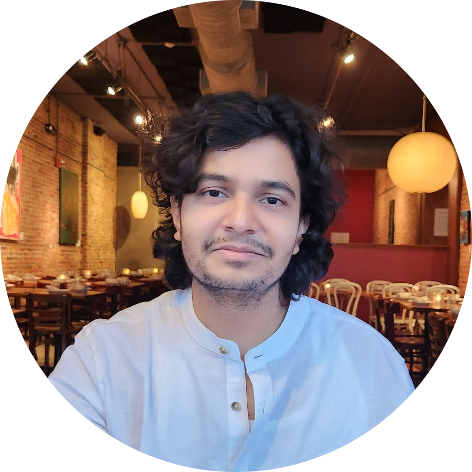
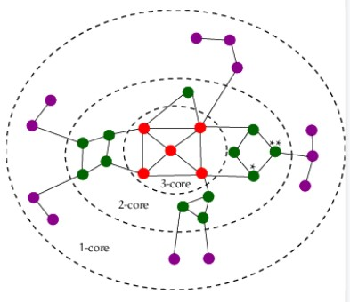

Spectral Dual Fitting for k-Means
SODA 2027.
Abstract
A new dual fitting algorithm which gives improved approximation ratios of 3+ln2+ϵ (≈3.694) and 4.9+ϵ for k-Means in (high-dimensional) Euclidean and general metrics respectively.

Ph.D. Candidate, Theoretical Computer Science
University of Michigan, Ann Arbor
amatya@umich.edu
Research Statement (Work in progress)
I am a Ph.D. candidate in Theoretical Computer Science at the University of Michigan, fortunate to be co-advised by Nikhil Bansal and Euiwoong Lee. I received my B.Tech. and M.Tech. in Computer Science from IIT Kharagpur.
My research interests include approximation, streaming, online, and parameterized algorithms, with a focus on constraint satisfaction problems, clustering, and combinatorial optimization.
Authors are listed alphabetically by surname, following the theory-CS convention.
SODA 2027.
A new dual fitting algorithm which gives improved approximation ratios of 3+ln2+ϵ (≈3.694) and 4.9+ϵ for k-Means in (high-dimensional) Euclidean and general metrics respectively.
ESA 2026. Invited to a special issue of Theoretical Computer Science.
Characterizes the single-pass streaming complexity of CSP satisfiability, up to logarithmic factors, by the non-redundancy of the constraint language.
APPROX 2025.
We continue the study of complete instances for minimization constraint satisfaction problems and give a polylogarithmic approximation for Min-Not-All-Equal-3-SAT on complete instances.
SODA 2025.
We initiate the study of complete instances for minimization constraint satisfaction problems and prove algorithmic results for Min-2CSP and related k-CSPs.
FSTTCS 2024.
We present a decomposition approach for the online weighted k-server problem.
ICALP 2022.
We give a (3/2 + ε)-approximation algorithm for 2D Strip Packing in a guillotine-separable setting, including a PPTAS.
SoCG 2021; contributed talk at HALG 2021.
We give a PPTAS for the 2D Knapsack problem in a guillotine-separable setting, improving over the previous best approximation factor of 3.
CALDAM 2021.
We study parameterized algorithms for Liquid Democracy, a voting system where voters may delegate their votes.
arXiv preprint. In submission to STACS 2027.
Gives a near-complete classification of non-redundancy growth for low-arity symmetric Boolean predicates, exact through arity 4 and for all but two arity-5 predicates.
In submission to STOC 2027.
Submitted to ITCS 2027.
Submitted to ITCS 2027.
In submission to STACS 2027.
Planned submission to IJCAI 2027.
Symmetry in Efficient Computation with Local Constraints.
Technical training in foundational AI alignment, including deep learning theory, agent foundations, and interpretability.
EECS 281: Data Structures & Algorithms.
Host: Santhoshini Velusamy. Research on streaming complexity and constraint satisfaction problems.
EECS 477: Introduction to Algorithms.
Host: Ashish Chiplunkar. Research on online algorithms.
Implemented a Java library for secure HTTP authentication using the Java Cryptography Architecture.
Host: Arindam Khan. Research in approximation algorithms and geometric packing.
Organized theory CS group talks and lunches at the University of Michigan, 2023–2024.
A few things from earlier along the way.
In addition to published work, I have explored numerous projects, including theory CS, computer architecture, software engineering, machine learning, and compilers.

Palash Dey, Amatya Sharma
We analyze pure-strategy Nash equilibria in binary networked public good games and study associated hardness and XP algorithms.
Palash Dey and Amatya Sharma, 2021.
Developed parameterized algorithms for the game-theoretic problem of computing Margin of Victory for tournament solutions.
Faraaz Mallick, Dewang Modi, Amatya Sharma
Participating in ML Reproducibility Challenge 2021.
Implemented and experimented with a new model based on image reconstruction and augmentation. Reproduced an AAAI 2021 paper on Improving Sample Efficiency in Model-Free Reinforcement Learning from Images.

Amatya Sharma, Shankar Venugopal, and Mohana Kera
Summer Intern Project, ExaCC Team, Oracle R&D Server Technology.
Implemented a Java library for secure HTTP authentication using Java Cryptography Architecture.
Prince Bharadwaj, Adarsh Goyal, Nwe Ni Kyaw, and Amatya Sharma
Advanced Machine Learning Course Term Project.
A term project on local and global approximation techniques for Gaussian process kernels, followed by experiments on numerous approximation techniques.
Udit Desai and Amatya Sharma
Software Engineering Course Term Project, November 2020.
Full-stack development of an online bookstore using HTML, CSS, JSP, and MySQL.

Divyang Mittal and Amatya Sharma
Compilers Course Project, November 2019.
Implemented a compiler for TinyC, a subset of C with a reduced set of functionalities, using Yacc, Bison, FLEX, C, and C++.
Nikhil Shah and Amatya Sharma
Computer Architecture Course Term Project, November 2019.
Developed a reduced instruction set computer processor and simulated it on FPGA Spartan 3 boards using Verilog.
I am a coffee aficionado straight from the Himalayas. For coffees, mountains, photos, and music, visit my personal page ☕.
Amatya Sharma
amatya@umich.edu
Download CV
2741 Bob and Betty Beyester Building
Ann Arbor, MI 48109, US